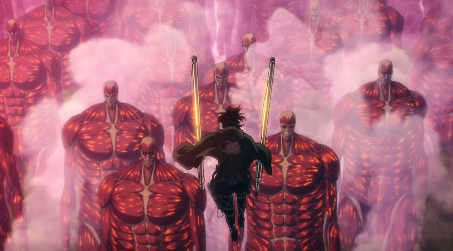

The history of the Titans in Attack on Titan is deeply rooted in myth, war, and politics, shaping the entire world in which the story unfolds. Titans are gigantic, humanoid creatures that are both feared and revered, with a complex and tragic origin. What begins as a straightforward battle for survival against these monstrous beings slowly reveals layers of history, involving nations, betrayal, and the legacy of the power of the Titans. The Myth of Ymir Fritz The history of the Titans begins with the legend of Ymir Fritz, a slave who, around 2,000 years ago, came into contact with a mysterious source of power that granted her the ability to transform into the first Titan. According to myth, Ymir was a servant of the Eldian King, who used her newfound power to conquer nations and establish the Eldian Empire. Ymir’s powers allowed the king to expand his territory and reign over humanity through fear and destruction. Ymir’s reign as the Founding Titan lasted for 13 years, and after her death, her powers were split into nine distinct Titans. These nine Titan powers were passed down through her descendants, forming the foundation of the Eldian royal family’s control. The nine Titans included the Founding Titan, the Attack Titan, the Colossal Titan, the Armored Titan, and others, each with unique abilities. These Titans became tools for war, and the Eldian Empire continued to dominate the world for centuries. The Eldian Empire and the Conflict with Marley For over a millennium, the Eldian Empire, empowered by the Titans, subjugated other nations, including Marley, a neighboring nation. The Eldian people, under their royal family's control, used the power of the Titans to expand their influence, with the Nine Titans serving as devastating weapons in warfare. However, the balance of power began to shift. Over time, Marley rebelled against Eldian rule, and a great war ensued. Marley used internal divisions within the Eldian Empire to its advantage, pitting Eldian factions against each other. Eventually, Marley managed to wrest control of seven of the nine Titan powers and used them to turn the tide of the war. This war, known as the Great Titan War, led to the collapse of the Eldian Empire. King Karl Fritz, the then ruler of Eldia, retreated to the island of Paradise, where he constructed the three walls (Maria, Rose, and Sina) out of hardened Titans and took his people with him. In his isolation, he vowed to abandon warfare and left the mainland in the hands of Marley. The Rise of Marley and the Subjugation of Eldians With the fall of the Eldian Empire, Marley rose to power and began using the Titans as weapons of war to expand their influence across the globe. The Marleyan government oppressed the remaining Eldians, who were forced to live in internment zones under harsh conditions. Eldians living in Marley were subjected to discrimination and used as pawns in Marley’s military strategy. Marley developed a system where Eldians were transformed into Pure Titans—mindless, monstrous versions of Titans used as living weapons. These Eldians were exiled to Paradis Island, where they would wander as Titans, serving as a buffer between Marley and any potential threats from the royal family in the walls. Marley also controlled the power of seven of the Nine Titans, and selected Eldian children from internment zones were chosen to inherit these powers, trained as Warriors to serve Marley. The Founding Titan and the Power of the Titans The most significant of the Nine Titans is the Founding Titan, which has the ability to control other Titans and even alter the memories of Eldians. The Founding Titan remained in the hands of the royal family on Paradis Island. However, King Karl Fritz’s successors, including Frieda Reiss, chose to uphold his pacifist ideology. They used the power of the Founding Titan to wipe the memories of the Eldians inside the walls, making them believe that humanity had been wiped out, and they were the last survivors. However, this peace was threatened when Grisha Yeager, a former Eldian revolutionary and father of the story’s protagonist, Eren Yeager, stole the power of the Founding Titan by killing the royal family. Grisha passed the power of the Founding Titan to Eren, setting in motion the events of the series. The Return of the Titans to Paradis The main story of Attack on Titan begins with the return of the Titans to Paradis Island. The Marleyan government, seeking to reclaim the power of the Founding Titan, sends a group of child soldiers known as the Warriors to infiltrate the walls and retrieve the Founding Titan. These warriors, who include Reiner Braun (the Armored Titan) and Annie Leonhart (the Female Titan), breach Wall Maria, allowing Titans to flood the outer regions of the human population and setting off a chain of events that forces Eren, Mikasa, and Armin to join the military. Throughout the series, Eren and his friends gradually uncover the truth about the Titans, the history of Eldia and Marley, and the real nature of their world. They discover that the conflict between Eldians and Marleyans has been shaped by centuries of hatred and violence, with the Titans being used as both tools of oppression and symbols of freedom. Conclusion The history of the Titans is deeply intertwined with the conflict between Eldia and Marley, the two dominant nations in the world of Attack on Titan. Titans, originally a product of one woman’s extraordinary power, became weapons of mass destruction and tools of political control. The long and tragic history of the Titans reflects the cyclical nature of violence, oppression, and revenge that dominates the story’s themes. As the characters in the series uncover these truths, they are forced to confront not only their enemies but also the dark legacy of their ancestors, making Attack on Titan a complex and thought-provoking narrative.
